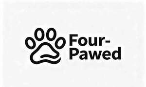

Trade Mark Journal No.2025/049 5 December 2025
UK00004302311 28 November 2025 (14,16,28,31)

- Class 14
- Key rings and key chains, and charms therefor; Key chains; Jewellery charms; Jewellery; Pet jewelry; Chains made of precious metals [jewellery]; Jewelry chains; Jewellery chain of precious metal for bracelets; Bead bracelets; Wooden bead bracelets; Bracelets; Bangles; Key fobs; Bracelet charms; Necklace charms; Metal key chains; Key rings of leather; Charms for key chains; Trinkets [jewelry]; Charms.
- Class 16
- Greeting cards; Blank paper notebooks; Notebooks; Photographic albums; Mini photo albums; Paper for printing photographs; Digital printing paper; Erasers; Stationery; Pencils; Drawing rulers; Drawing compasses; Adhesives for stationery and household use; Glue for stationery or household use; Adhesive tape for stationery purposes; Pen and pencil cases; Sketchbooks; Drawing paper; Writing paper; Paper.
- Class 28
- Toys for domestic pets; Dog toys; Infant toys; Stuffed and plush toys; Plush dolls; Rubber balls; Toy animals; Accessories for dolls; Toy building blocks capable of interconnection; Toy building blocks; Toy cars; Toy sets; Toy models; Toys; Stuffed toys; Exercise balls; Exercise treadmills; Electronic learning toys; Baby rattles; Inflatable pool toys.
- Class 31
- Cat litter; Sand for pet toilets; Cat litter and litter for small animals; Litter for domestic animals; Bedding and litter for animals; Litter for small animals; Aromatic sand for pets [litter]; Sanded paper for pets [litter]; Animal litter; Pet food; Pet beverages; Edible pet treats; Bedding materials for animals; Paper for use as animal bedding; Litter for dogs; Animal feeds; Cat food; Dog food; Small animal bedding made of recycled paper; Cellulose for use as animal bedding.
Yao Gongwei
Representative: XIKEIPR LIMITED